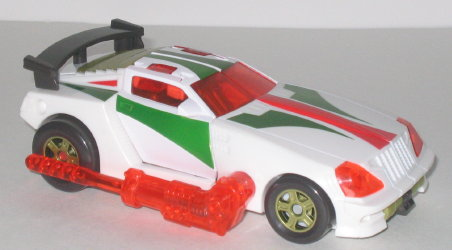
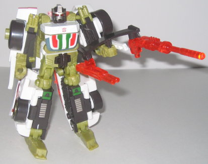
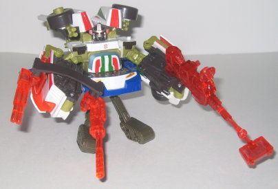

Downshift
(Energon)
Downshift
(Energon)


Allegiance
: Autobot
Size
: Deluxe
Difficulty of Transformation
: Easy
Difficulty of Powerlinx Transformation
:
Easy
Color Scheme
: White, transparent
light red, greenish tan, charcoal black, metallic green, and some silver,
black, metallic greenish gold, and metallic silverish blue
Powerlinx ports
: 2 (on gun)
Rating
: 8.1
Vehicle mode is a sportscar.
Both in this mode and in his robot mode, Downshift is a pretty heavy nod
to G1 Wheeljack. In this mode, Downshift has a pretty much identical color
scheme when compared to G1 Wheeljack, and similar green/red streaks on
the top of the car. As for the toy itself, this mode is pretty solid. No
robot extras whatsoever, and the "tail fin" and exhaust pipes on the sides
are pretty nice details. Downshift's even got little "normal" exhaust pipes
under the rear of the vehicle, which is a nice extra detail. His side doors
can fold up vertically as well, like a lamboughini's, though don't expect
to see anything but robot parts inside the car. My problems with this mode
are two-fold. For one, his mold detailing is VERY sparse in this mode,
making the car look a bit more simplistic than it should. Also, the windows,
when compared to the size of the car, are entirely too small and slanted.
I imagine if this car were enlarged proportionally to the size of a real
one and seats were put in, people would constantly bonk their head on the
inside because of the low ceiling. Downshift's silver Powerlinx symbol
is on the left side, about the rear wheel. His Autobot spark crystal, oddly
enough, is in the middle of that same rear wheel. So now you can watch
the crystal symbol twirl around as you roll Downshift along! It's an odd
place for it, but it's nice and unique, and a puts a cool little spin on
the gimmick.
Downshift's robot mode
is also pretty good, although it does have a few problems. For one thing,
the articulation is a bit below-average for an Energon toy; he can move
at the head, the shoulders (at two points), the elbows, sideways at the
hips, and back-and-forth at the knees. This still seems like reasonable
articulation, but his "knees" are only about a fifth down his legs, and
some of the stuff on his back can interfere with the movement a little.
These said "extras" are part the back half of the vehicle mode, as well
as the car doors. The car doors seem to meld reasonably well with Downshift's
legs (though they certainly don't meld seamlessly), but vehicle part on
his back really can get in the way of knee articulation, and it just kinda
hangs off without really complementing the mode at all. Also, when you
lift his arms up, the force causes his chest to open up a little, as there's
no real clip holding it together. Not too bit of a deal, but it can get
a little annoying. I also feel I should say something about the odd greenish-tan
color used on much of Downshift's robot mode-- it's really not as bad as
it seems, but I think a regular old tan would have worked a little better.
Downshift's proportions are better than your average Powerlinking Autobot
(though his chest is a bit small), and his head and chest design are a
spitting image of G1 Wheeljack's (i.e., cool-looking). I still can't figure
out why Hasbro didn't just name him Wheeljack- they have the rights to
the name, after all. I know there was a Decepticon car in Armada named
Wheeljack as well, but he seemed to become sort of a good guy near the
end of the series- why not just say this is his upgraded form as an Autobot?
Well, anyways, overall it's a pretty solid mode. Downshift's gun is rather
odd, though- I mean, just look at it. He holds a long bar with a gun at
each end of it. I prefer just to leave the tailfin attached to the piece
on his back and have him hold both guns seperately.


As the upper half of
a Powerlinx robot, Downshift is pretty typical- his lower arms are too
large, but it doesn't look quite as goofy as some other Autobots (I'm looking
at YOU,
Rodimus
). It's pretty clear the designers
didn't quite know what to do with Downshift's "normal" arms, though- they
just kind hang behind his head, hoping you won't notice them even though
you defintely will.
As the bottom half of
a Powerlinx robot, Downshift is pretty unoriginal. Basically you just take
his top half and bend it backwards. So the bottom half of his regular robot
mode is the bottom half of the Powerlinx robot. Big whoop. His top half
also doesn't really go anywhere, so it's a heck of a big piece of kibble.
Downshift is a decent
Powerlinxing Autobot, as his Powerlinx modes (which I don't use much anyways,
since I hate the way 95% of the Powerlinx robots look anyways) mostly suffer
from the gimmick, and not his individual modes. He does have a few articulation
and detailing problems, but they by no means ruin the toy. Mildly recommended.
Downshift Bio
:
MOTTO: "If I can't beat ya in battle,
I'll beat ya on the road."
Downshift is a fast and courageous young
Autobot. He relies on speed rather than strength to get him out of tight
spots when battling the Decepticons. Although he is considered a good soldier
by Optimus Prime and Hot Shot, he has been warned about rushing into battle
without a solid plan of attack. Hot Shot, especially, can relate to this
headstrong young Autobot and has vowed to mold him into a mature and seasoned
warrior.
Strength: 6.0
Intelligence: 6.0
Speed: 9.0
Endurance: 8.0
Rank: 6.0
Courage: 9.0
Fireblast: 7.0
Skill: 8.0
Review by Beastbot
Back to Transformers:
Energon Index